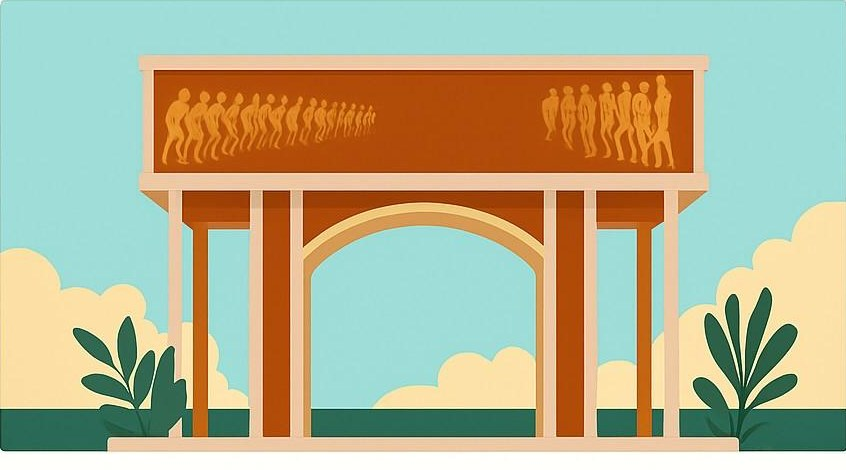

À propos

Notre entreprise
LocalBox est une plateforme e-commerce béninoise qui connecte les consommateurs aux produits et aux commerçants locaux. Magasin, TokpaExpress et Marketplace réunissent, sur une seule interface, le commerce de détail, l'approvisionnement en gros et les boutiques indépendantes.
Nos valeurs
Entraide communautaire, valorisation du local et fiabilité. LocalBox favorise un commerce local au service des producteurs et commerçants béninois, et place l'humain au cœur de chaque transaction.
Notre mission
Une mission double : simplifier la vie des consommateurs urbains en leur donnant accès à tous les produits du marché depuis leur téléphone, et offrir aux commerçants, détaillants et artisans une vitrine numérique professionnelle pour développer leur activité.
Notre histoire
LocalBox est née en 2025 à Cotonou de l'expérience du terrain : longues heures au marché, produits lourds à transporter, absence de livraison fiable et de visibilité en ligne pour les vendeurs. Une équipe de jeunes entrepreneurs béninois a décidé d'y répondre.
Pourquoi maintenant ?
Reconnecter virtuellement ce que la ville sépare physiquement
Le grand marché Dantokpa, cœur économique de Cotonou, se transforme : multiplication des petits marchés urbains et délocalisation partielle du marché de gros vers Abomey-Calavi. Pour les commerçants et les familles, cela signifie plus de distance, plus de temps perdu et des repères bouleversés.
Cette mutation est aussi une opportunité : repenser le commerce de proximité à l'ère numérique. LocalBox se positionne comme le pivot numérique de cette réorganisation — une infrastructure complète de commerce local intelligent, pas seulement un site de vente.
Un écosystème complet
- B2C — Magasin : les ménages, et en particulier les mères de famille, piliers des courses du quotidien
- B2B — TokpaExpress : les boutiques, kiosques et épiceries qui s'approvisionnent en gros
- B2B2C — Marketplace : les commerçants indépendants, artisans et restaurateurs qui veulent vendre en ligne
Feuille de route
Un déploiement en trois phases
Test
MVP du site, 10 fournisseuses pilotes de Tokpa, premiers tests logistiques et groupe pilote de clients. Lancement des réseaux sociaux et du #CarnetDuMarché.
Pré-lancement
Paiement Mobile Money, suivi en temps réel, bêta de TokpaExpress et de la Marketplace, application Android, programme de fidélité, objectif ~1 000 utilisateurs inscrits.
Lancement officiel
Conférence de lancement, applications Android et iOS, ouverture complète de la Marketplace, hub central à Cotonou, extension à Porto-Novo puis Parakou, offre grands comptes.
Notre organisation
Une équipe structurée pour grandir
L'équipe s'organise autour d'un pilotage stratégique, de cinq directions fonctionnelles et de départements opérationnels dédiés à chaque service.
Vision, stratégie, partenaires et investisseurs
Coordination de tous les départements
Technique, logistique, support client, data
Communication, Magasin, TokpaExpress, Marketplace
Juridique, administratif, ressources humaines
Comptabilité, tarification, financements
👩🏾🌾 Nos ambassadrices du marché
Des fournisseuses de Tokpa préparent les commandes et font connaître LocalBox dans les milieux commerciaux traditionnels. Nos « Gardiens du Marché » — commerçantes, mamans digitales, jeunes créateurs — partagent leur expérience sur les réseaux.
🤝 Partenaires
- Réseau de fournisseuses du marché Dantokpa
- Partenaires de livraison urbaine (partenariat avec Gozem visé)
- Opérateurs Mobile Money : MTN, Moov, Celtiis
- Candidat au programme d'accompagnement Next Impact
🏛️ Cadre juridique
LocalBox SARL, Cotonou. Une évolution vers une Société Anonyme (SA) est envisagée pour accompagner l'expansion nationale.
Vision à 10 ans
Le commerce béninois de demain
🌍 Afrique de l'Ouest
Couvrir tout le Bénin via des hubs régionaux, puis le Togo, le Burkina Faso, le Niger, le Ghana, la Côte d'Ivoire…
🌾 Souveraineté alimentaire
Avec AgroBox, relier directement les fermes béninoises aux villes, en circuit court et traçable.
💼 Emplois & formation
Livreurs, agents de hub, vendeurs et la LocalBox Academy pour former aux métiers du e-commerce.
📈 Formalisation
Intégrer progressivement des milliers d'acteurs informels dans des circuits structurés et équitables.
« L'Apple du commerce de proximité, avec l'âme d'un marché de quartier. »
Rejoignez LocalBox !
« Le Marché dans votre main, le cœur dans votre poche. »